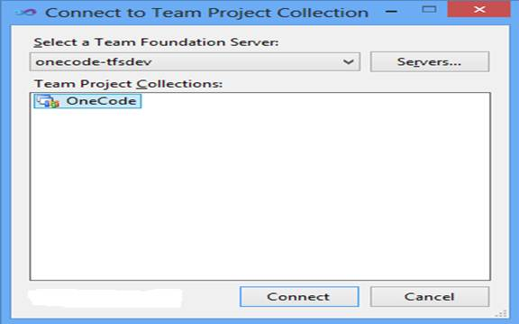

Create TFS Source Browser using TreeView in WinForm
Create Team Foundation Server Source Browser using TreeView in Windows Form (VBWinformTFSTreeView)
Introduction
This article and the attached code sample demonstrate how to display the Team Foundation Server hierarchical source items in a tree structure outside Visual Studio Team Explorer. You can find the answers for all the following questions in the code sample:
• How to make connection with Team Foundation Server?
• How to get one level Team Foundation Server Version Control Items?
• How to create the TreeView.BeforeExpand event handler and generate the TreeNode based on the hierarchy of Team Foundation Version Control Server?
Building the Sample
To build this sample, you must install TFS (Team Foundation Server) 2010 SP1 Object Model at first. By using the TFS Object Model, the attached code samples can retrieve the Team Foundation Version Control Server Items outside the Visual Studio or Team Explorer.
The standalone Team Foundation Server 2010 SP1 Object Model Installer is available for download from the Visual Studio Gallery:
Download the Team Foundation Server 2010 SP1 Object Model Installer here.
Note: this is the same Object Model included with the Visual Studio & Team Explorer SKU.
Running the Sample
After you successfully build the sample project in Visual Studio 2010, you will get the application CSWinformTFSTreeView.exe. Run the application either in debug mode in the Visual Studio or in standalone mode in the Windows Explorer. The application should be initially displayed as following on the Main dialog.

Click the Connect button and add the Team Foundation Server connection in the "Connect to Team Project" Dialog.

When the connection with Team Foundation Server is established, you will see the TFS Version Control Server items shown in the hierarchical structure in the Tree View at the bottom of the Main dialog.

Using the Code
The code sample provides the following reusable functions for browsing the Team Foundation Version Control hierarchical sources in the Windows Forms TreeView control.
How to make connection with Team Foundation Server?
Public Function Connect() As Boolean
Try
TfsVersionControlServer = New TfsTeamProjectCollection(
TeamFoundationServerCollectionUri).GetService(Of VersionControlServer)()
Return (Not GetChildLevelTfsVcsItems("$/") Is Nothing)
Catch tfsUnavailableException As TeamFoundationServiceUnavailableException
CommonUtilities.ShowWarning(tfsUnavailableException.Message)
Catch webException As WebException
CommonUtilities.ShowError(webException.Message)
End Try
Return False
End Function
Public Function Connect() As Boolean
Try
TfsVersionControlServer = New TfsTeamProjectCollection(
TeamFoundationServerCollectionUri).GetService(Of VersionControlServer)()
Return (Not GetChildLevelTfsVcsItems("$/") Is Nothing)
Catch tfsUnavailableException As TeamFoundationServiceUnavailableException
CommonUtilities.ShowWarning(tfsUnavailableException.Message)
Catch webException As WebException
CommonUtilities.ShowError(webException.Message)
End Try
Return False
End Function
How to get one level Team Foundation Server Version Control Items?
Public Function GetChildLevelTfsVcsItems(ByVal serverNodePath As String) As ItemSet Try Return TfsVersionControlServer.GetItems(serverNodePath, RecursionType.OneLevel) Catch tfsUnavailableException As TeamFoundationServiceUnavailableException CommonUtilities.ShowWarning(tfsUnavailableException.Message) Catch webException As WebException CommonUtilities.ShowError(webException.Message) End Try Return Nothing End Function
Public Function GetChildLevelTfsVcsItems(ByVal serverNodePath As String) As ItemSet Try Return TfsVersionControlServer.GetItems(serverNodePath, RecursionType.OneLevel) Catch tfsUnavailableException As TeamFoundationServiceUnavailableException CommonUtilities.ShowWarning(tfsUnavailableException.Message) Catch webException As WebException CommonUtilities.ShowError(webException.Message) End Try Return Nothing End Function
How to create the TreeView.BeforeExpand event handler and generate the TreeNode based on the hierarchy of Team Foundation Version Control Server?
Private Sub TvwSourceBrowserBeforeExpand(sender As System.Object, e As Windows.Forms.TreeViewCancelEventArgs) Handles tvwSourceBrowser.BeforeExpand If ((Not e Is Nothing) AndAlso (Not e.Node Is Nothing)) Then Dim currentNode As TreeNode = e.Node Dim currentNodeServerPath As String = TryCast(currentNode.Tag, String) If Not String.IsNullOrEmpty(currentNodeServerPath) Then Dim asyncResult As IAsyncResult = tvwSourceBrowser.BeginInvoke( New Action(Of TreeNode)(AddressOf Me.GenerateChildrenTFSTreeNode), New Object() {currentNode}) tvwSourceBrowser.EndInvoke(asyncResult) End If End If End Sub ''' <summary> ''' Generate children TFSNode per the parentNode server path. ''' </summary> ''' <param name="parentNode">parent TreeNode</param> ''' <remarks></remarks> Private Sub GenerateChildrenTFSTreeNode(ByVal parentNode As TreeNode) Dim currentNodeServerPath As String = TryCast(parentNode.Tag, String) If Not String.IsNullOrEmpty(currentNodeServerPath) Then parentNode.Nodes.Clear() Dim items As ItemSet = tfsContext.GetChildLevelTfsVcsItems(currentNodeServerPath) If ((Not items Is Nothing) AndAlso (Not items.Items Is Nothing)) Then ' Filter the first item which is the self item. For i As Integer = 1 To Enumerable.Count(Of Item)(items.Items) - 1 Dim tfsTreeNode As TreeNode = CreateTFSTreeNode(items.Items(i).ServerItem, items.Items(i).ItemType) If (Not tfsTreeNode Is Nothing) Then parentNode.Nodes.Add(tfsTreeNode) End If Next End If End If End Sub ''' <summary> ''' Create TreeNode per the tfs server item type ''' If it's a folder type, use Folder icon for the node; ''' If it's a file type, get the file type associated icon for the node. ''' </summary> ''' <param name="tfsServerItem">TFS Server item full path</param> ''' <param name="tfsItemType">TFS Server item type</param> ''' <returns>TreeNode for a tfs server item</returns> ''' <remarks></remarks> Private Function CreateTFSTreeNode(ByVal tfsServerItem As String, ByVal tfsItemType As ItemType) As TreeNode Dim treeNode As TreeNode = Nothing If Not String.IsNullOrEmpty(tfsServerItem) Then Dim nodeName As String = Path.GetFileName(tfsServerItem) If String.IsNullOrEmpty(nodeName) Then Return treeNode End If Dim imageIndex As Integer = 0 treeNode = New TreeNode(nodeName) Select Case tfsItemType Case ItemType.Folder imageIndex = ImageListExtension.GetImageListIndex( imageList, My.Resources.FolderExtensionName) treeNode.Nodes.Add(My.Resources.WaitingTreeNodeName) Exit Select Case ItemType.File Dim nodeExtension As String = Path.GetExtension(nodeName) imageIndex = ImageListExtension.GetImageListIndex( imageList, nodeExtension) Exit Select End Select treeNode.ImageIndex = imageIndex treeNode.SelectedImageIndex = imageIndex treeNode.Tag = tfsServerItem End If Return treeNode End Function
Private Sub TvwSourceBrowserBeforeExpand(sender As System.Object, e As Windows.Forms.TreeViewCancelEventArgs) Handles tvwSourceBrowser.BeforeExpand If ((Not e Is Nothing) AndAlso (Not e.Node Is Nothing)) Then Dim currentNode As TreeNode = e.Node Dim currentNodeServerPath As String = TryCast(currentNode.Tag, String) If Not String.IsNullOrEmpty(currentNodeServerPath) Then Dim asyncResult As IAsyncResult = tvwSourceBrowser.BeginInvoke( New Action(Of TreeNode)(AddressOf Me.GenerateChildrenTFSTreeNode), New Object() {currentNode}) tvwSourceBrowser.EndInvoke(asyncResult) End If End If End Sub ''' <summary> ''' Generate children TFSNode per the parentNode server path. ''' </summary> ''' <param name="parentNode">parent TreeNode</param> ''' <remarks></remarks> Private Sub GenerateChildrenTFSTreeNode(ByVal parentNode As TreeNode) Dim currentNodeServerPath As String = TryCast(parentNode.Tag, String) If Not String.IsNullOrEmpty(currentNodeServerPath) Then parentNode.Nodes.Clear() Dim items As ItemSet = tfsContext.GetChildLevelTfsVcsItems(currentNodeServerPath) If ((Not items Is Nothing) AndAlso (Not items.Items Is Nothing)) Then ' Filter the first item which is the self item. For i As Integer = 1 To Enumerable.Count(Of Item)(items.Items) - 1 Dim tfsTreeNode As TreeNode = CreateTFSTreeNode(items.Items(i).ServerItem, items.Items(i).ItemType) If (Not tfsTreeNode Is Nothing) Then parentNode.Nodes.Add(tfsTreeNode) End If Next End If End If End Sub ''' <summary> ''' Create TreeNode per the tfs server item type ''' If it's a folder type, use Folder icon for the node; ''' If it's a file type, get the file type associated icon for the node. ''' </summary> ''' <param name="tfsServerItem">TFS Server item full path</param> ''' <param name="tfsItemType">TFS Server item type</param> ''' <returns>TreeNode for a tfs server item</returns> ''' <remarks></remarks> Private Function CreateTFSTreeNode(ByVal tfsServerItem As String, ByVal tfsItemType As ItemType) As TreeNode Dim treeNode As TreeNode = Nothing If Not String.IsNullOrEmpty(tfsServerItem) Then Dim nodeName As String = Path.GetFileName(tfsServerItem) If String.IsNullOrEmpty(nodeName) Then Return treeNode End If Dim imageIndex As Integer = 0 treeNode = New TreeNode(nodeName) Select Case tfsItemType Case ItemType.Folder imageIndex = ImageListExtension.GetImageListIndex( imageList, My.Resources.FolderExtensionName) treeNode.Nodes.Add(My.Resources.WaitingTreeNodeName) Exit Select Case ItemType.File Dim nodeExtension As String = Path.GetExtension(nodeName) imageIndex = ImageListExtension.GetImageListIndex( imageList, nodeExtension) Exit Select End Select treeNode.ImageIndex = imageIndex treeNode.SelectedImageIndex = imageIndex treeNode.Tag = tfsServerItem End If Return treeNode End Function
More Information
MSDN: Connect to and Access Team Projects in Team Foundation Server
MSDN: Connect to Team Foundation Server from a Console Application
MSDN: VersionControlServer.GetItems Method (String, RecursionType)